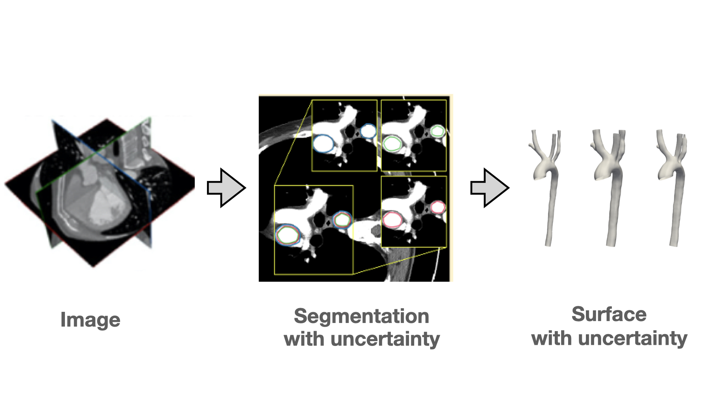
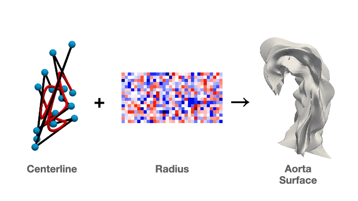
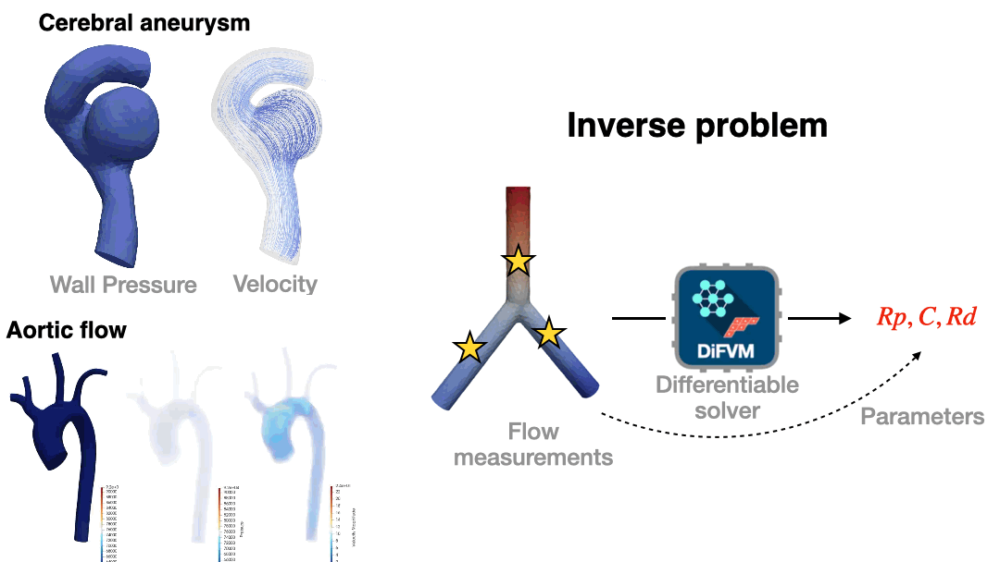
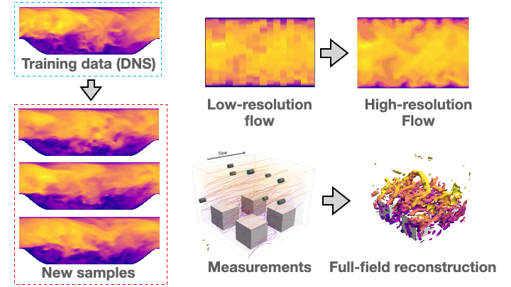
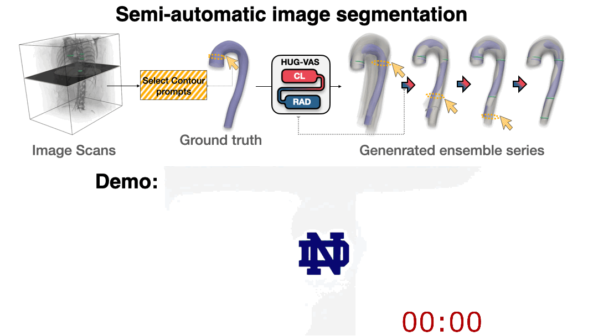
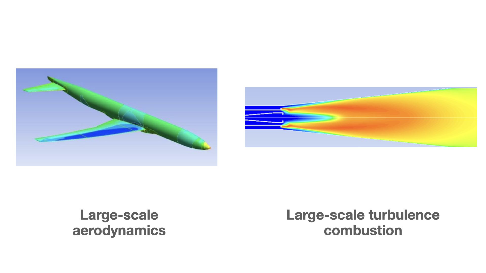
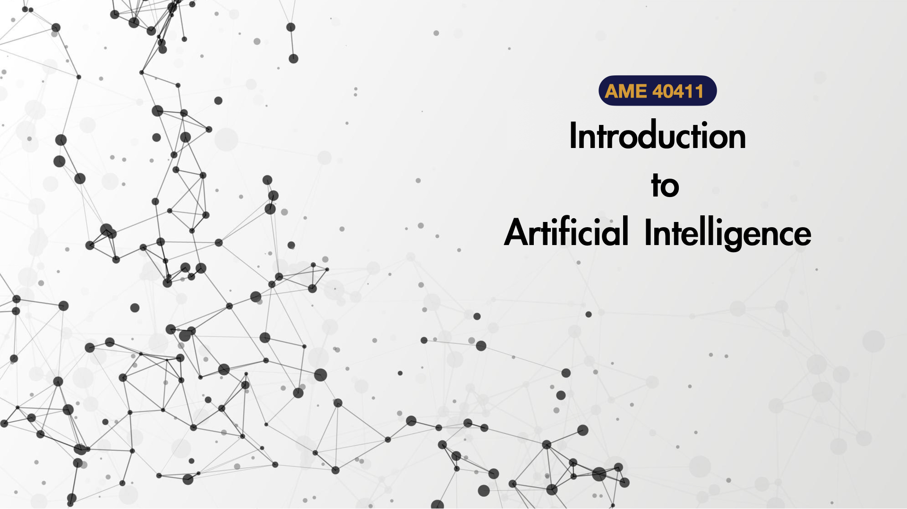

About
I am an incoming Assistant Professor in the Department of Mechanical Engineering at Iowa State University, where I will establish the Physics & Health via AI and Shape Emulation (PHASE) Lab beginning in Fall 2027. My research focuses on scientific machine learning for computational physics and geometry modeling.
I received my undergraduate degree from Tsinghua University and my master's degree from Washington University in St. Louis. I earned my Ph.D. in Aerospace and Mechanical Engineering from the University of Notre Dame under the supervision of Prof. Jian-Xun Wang, and I am currently a postdoctoral researcher at the University of California, Berkeley with Prof. Shawn Shadden.

Research projects

Generative modeling for vascular geometry

Cross-patient shape registration

Differentiable modeling for fluid mechanics

Generative AI for turbulence modeling

Semi-automatic image segmentation

Large-scale computational physics
Contact
panai4health@berkeley.edu 574-800-9663 University of California, Berkeley 2167 Etcheverry Hall, Berkeley, CA 94720Upcoming events
- I will be joining Department of Mechanical Engineering at Iowa State University as a tenure-track assistant professor in Fall 2027.
- Downstream application for the DiFVM solver is on the way.
Past events
- (April 2026) Our GPU enabled solver DiFVM is online: arXiv:2603.15920.
- (Feb 2026) I will be joining Dr. Shawn Shadden's lab at University of California, Berkeley starting Feb 9.
- (Jan 2026) I will defend my Ph.D. dissertation on the topic From Medical Imaging to Hemodynamics: AI-Enabled Modeling of Cardiovascular Flow.
- (Nov 2025) I will attend APS DFD and present our latest GPU-enabled solver for patient-specific cardiovascular flow simulation.
Publications
Submitted & in preparation
- Wang, X., Du, P., Taneja K., Doon-Ralls, J., Reategui, E., & Holland, M. (2026). Discovery of Self-Limiting Neutrophil Swarming Using Bayesian Physics-Informed Neural Network.
- Guo, J., Du, P., & Wang, J. X. (2026). Separable Conditional Neural Fields for In-Situ Compression of High-Fidelity Spatiotemporal Turbulence Simulation Data.
- Du, P., Xu, M., Li, Y., & Wang, J. X. (2026). DiFVM: A Vectorized Graph-Based Finite Volume Solver for Differentiable CFD on Unstructured Meshes. arXiv:2603.15920.
- Du, P., Xu, M., Zhu X., & Wang, J. X. (2026). HUG-VAS: A Hierarchical NURBS-Based Generative Model for Aortic Geometry Synthesis and Controllable Editing. arXiv:2507.11474.
- An, D., Du, P., Wang, J. X., & Wang C. (2026). TSGDiff: Text-Guided Diffusion via Segmentation Priors for Volumetric Medical Image Synthesis.
Published as leading author
- Du, P., An, D., Wang, C., & Wang, J. X. (2025). AI-Powered Automated Model Construction for Patient-Specific CFD Simulations of Aortic Flows. Science Advances, 11(36), eadw2825.
- Du, P., Parikh, M. H., Fan, X., Liu, X. Y., & Wang, J. X. (2024). Conditional neural field latent diffusion model for generating spatiotemporal turbulence. Nature Communications, 15(1), 10416.
- Du, P., & Wang, J. X. (2022). Reducing Geometric Uncertainty in Computational Hemodynamics by Deep Learning-Assisted Parallel-Chain MCMC. Journal of Biomechanical Engineering, 144(12), 121009.
- Du, P., Zhu, X., & Wang, J. X. (2022). Deep learning-based surrogate model for three-dimensional patient-specific computational fluid dynamics. Physics of Fluids, 34(8).
- Du, P., & Agarwal, R. K. (2017). Drag Prediction of NASA Common Research Models Using Different Turbulence Models. 35th AIAA Applied Aerodynamics Conference.
- Du, P., & Agarwal, R. K. (2019). Numerical drag prediction of NASA Common Research Models using different turbulence models. Computers & Fluids, 191, 104238.

AME40411 Introduction to Artificial Intelligence
Course Instructor, undergraduate level, Fall 2025, 3 credits.
Download syllabusMy teaching philosophy emphasizes integrating modern AI methods with physical intuition and engineering principles. I aim to help students develop both theoretical understanding and practical problem-solving skills for next-generation computational engineering.
We are currently hiring highly motivated PhD students interested in scientific machine learning, computational physics, biomedical simulation, CFD, or geometry modeling.
Contact about openings